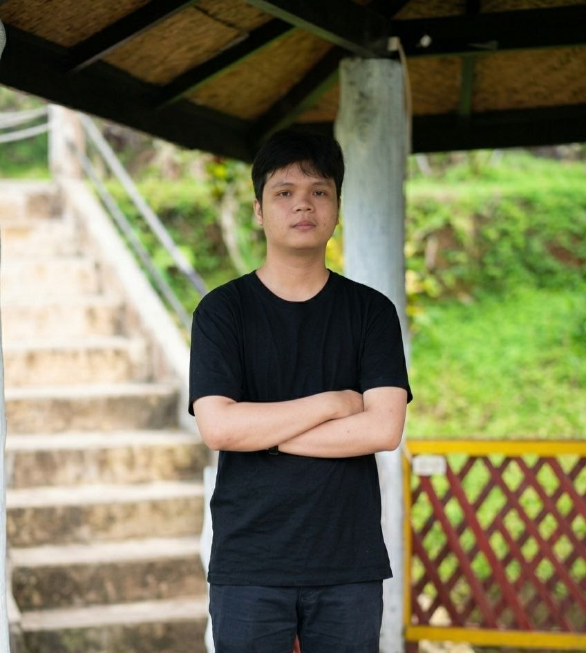
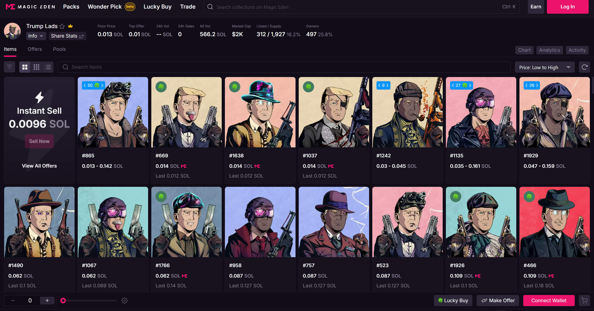
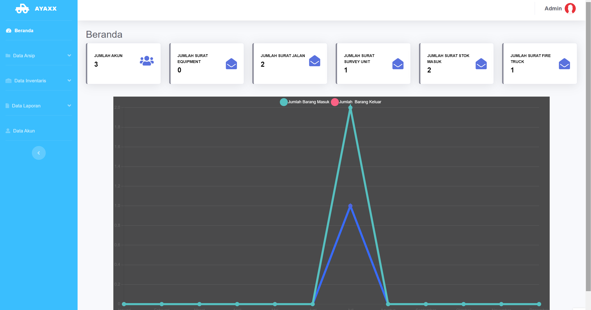
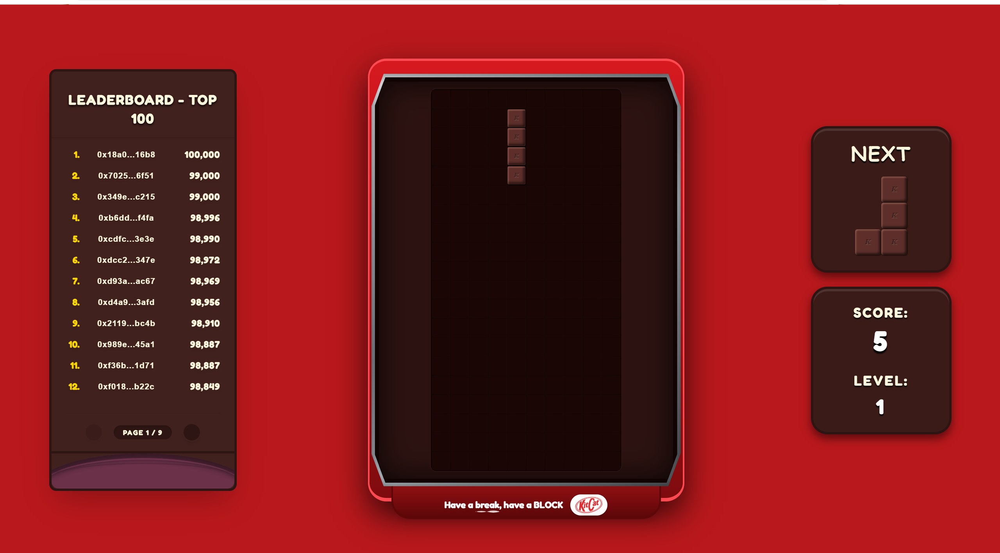

Web Developer | Digital Marketer | Web3 Advisor

Nama saya Dio Syani Dimastia. Saya fokus pada pengembangan web responsif, strategi pemasaran digital, dan konsultasi ekosistem Web3. Sebagai freelancer, saya membantu klien membangun fondasi digital yang kuat melalui solusi teknis yang efisien dan strategi pertumbuhan yang terukur.
Tahun Pengalaman
Proyek Selesai

Digital Marketing & Content Strategy untuk proyek NFT eksklusif di ekosistem Solana.
Baca Studi Kasus
Digitalisasi sistem pengelolaan dokumen dan aset fisik untuk efisiensi operasional perusahaan.
Baca Studi Kasus
Integrasi pengembangan game Tetris dan strategi visual konten untuk retensi komunitas Web3.
Baca Studi KasusMemberikan konsultasi strategis mengenai adopsi teknologi blockchain dan optimasi pertumbuhan digital untuk berbagai proyek freelance.
Fokus pada pembuatan website responsif serta menjalankan berbagai kampanye pemasaran digital untuk klien freelance.
Universitas Bina Sarana Informatika. Lulus dengan predikat sangat memuaskan. Fokus pada manajemen data dan sistem informasi digital.
PT Pundarika Atma Semesta. Bertanggung jawab atas pengembangan antarmuka web dan dukungan pemasaran digital sebagai mahasiswa magang.
Memulai karir freelance sebagai moderator di berbagai komunitas Web3, mengelola forum kripto, dan mendalami dasar-dasar arsitektur data digital.